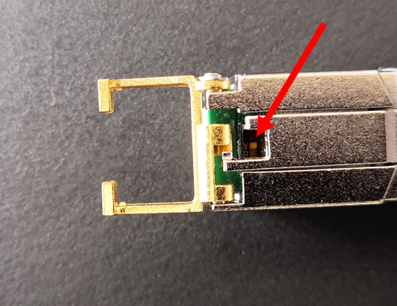

IO716 Usage Notes
IO716 Usage Notes — Usage information about the I/O module
Configuration
![[Important]](images/important.png) | Important |
|---|---|
Turn off the real-time target machine before changing the configuration. |
The I/O module is configured as a slave by default. You can change the configuration by using a DIP-Switch on the SFP.
First pull back the yellow handle and remove the SFP from the I/O module in order to access the DIP-Switch. Then remove the DIP-Switch cover to change the configuration.

The picture above shows a SFP configured as a slave.
DIP-Switch position:
OFF (points towards the top of the picture) = Slave
ON (points towards the bottom of the picture) = Master